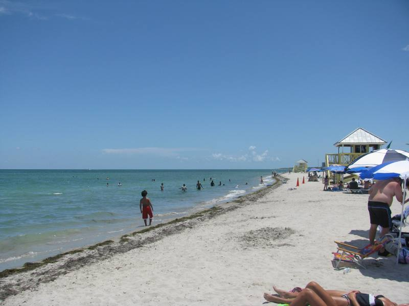
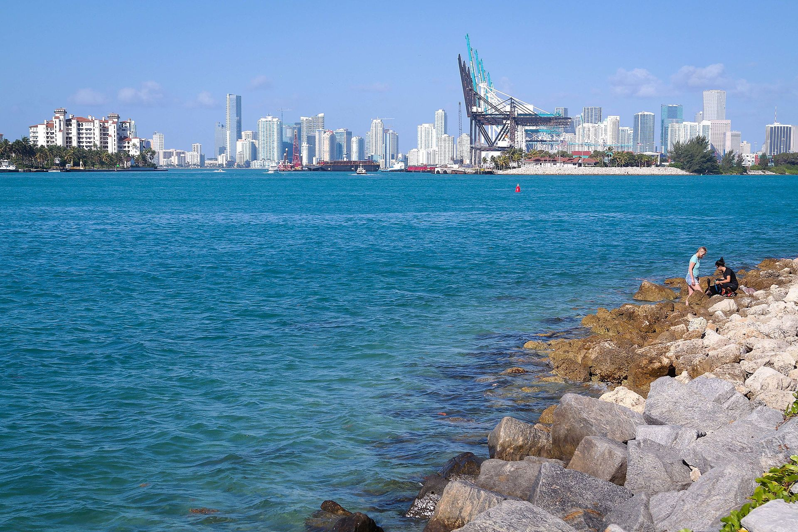

Bill Baggs Cape Florida State Park
El faro más antiguo de Florida. Playas de película a 25 minutos de Miami. Florida's oldest lighthouse. Movie-worthy beaches 25 minutes from Miami.
El faro de Cape Florida se construyó en 1825, cuando Miami no existía. Sobrevivió ataques seminoles, guerras y huracanes. Hoy, a 25 minutos del Downtown, sus 95 peldaños de espiral te llevan a una vista que ningún rascacielos puede igualar — el azul infinito de la bahía y el horizonte del Atlántico sin una sola nube artificial.
The Cape Florida lighthouse was built in 1825, when Miami didn't exist yet. It survived Seminole attacks, wars and hurricanes. Today, 25 minutes from Downtown, its 95 spiral steps take you to a view no skyscraper can match — the infinite blue of the bay and the Atlantic horizon without a single man-made cloud.
año de construcción del faro Cape Florida, el más antiguo de Florida aún en pie
year the Cape Florida lighthouse was built — the oldest still standing in Florida
Galería
Gallery


¿Cuánto sabes del faro de Cape Florida? How much do you know about Cape Florida?
5 preguntas · 2 minutos · Aprende algo nuevo 5 questions · 2 minutes · Learn something new
¿Qué puedes hacer aquí? What can you do here?
Playa y Natación Beach & Swimming
- 1.5 millas de playa blanca sin aglomeraciones 1.5 miles of uncrowded white beach
- Aguas claras — arena fina y limpia Clear waters — fine clean sand
- Dos áreas de playa: norte y sur Two beach areas: north and south
- Sombrillas y sillas disponibles (~$30/set) Umbrellas & chairs available (~$30/set)
Ciclismo y Running Cycling & Running
- Pista de bicicleta de 2 millas pavimentada 2-mile paved bike path
- Alquiler de bicis disponible Bike rentals available
- Ruta sin autos — perfecta para familias Car-free route — perfect for families
- Senda peatonal paralela Pedestrian trail parallel
Surf y Kayak Surfing & Kayak
- "The Cut" — olas para surf en la punta sur "The Cut" — surf waves at the southern tip
- Kitesurfing en temporada de viento Kitesurfing in windy season
- Kayak y paddleboard en la costa sur Kayak and paddleboard on south coast
- Alquiler de equipo disponible Equipment rental available
Faro Histórico Historic Lighthouse
- Tours guiados del faro (jue–lun 10am y 1pm) Guided lighthouse tours (Thu–Mon 10am & 1pm)
- 95 peldaños — vistas panorámicas del Atlántico 95 steps — panoramic Atlantic views
- Museo en la base del faro Museum at the lighthouse base
- Foto histórica con el faro de 1825 Historic photo op with the 1825 lighthouse
Antes de ir — lo que necesitas saber Before you go — what you need to know
🎒 Qué llevar What to bring
- 🏖️ Toalla y traje de baño 🏖️ Towel and swimsuit
- ☀️ Protector solar SPF 50+ ☀️ SPF 50+ sunscreen
- 💧 Agua y snacks — restaurante limitado 💧 Water and snacks — limited restaurant
- 🚴 Casco si alquilas bicicleta 🚴 Helmet if renting bike
- 💵 Efectivo o tarjeta para sombrillas 💵 Cash or card for umbrellas
- 📷 Cámara — atardeceres espectaculares 📷 Camera — spectacular sunsets
⚠️ Reglas importantes Important rules
- 🚫 No se permiten bebidas alcohólicas en la playa 🚫 No alcoholic beverages on the beach
- 🐠 No pesca en zonas de natación 🐠 No fishing in swimming zones
- 🚗 Estacionamiento limitado — llega temprano 🚗 Limited parking — arrive early
- ⛺ Camping disponible con reserva ⛺ Camping available with reservation
- 🦮 Perros solo en áreas designadas con correa 🦮 Dogs allowed only in designated areas on leash
📅 Cuándo ir When to go
Información práctica Practical information
Entrada Entry fee
$8/vehículo ($2 peatonal) America the Beautiful Pass válido America the Beautiful Pass validHorarios Hours
8am–sunset Tours del faro: jue–lun 10am y 1pm Lighthouse tours: Thu–Mon 10am & 1pmCómo llegar Getting there
~25min desde Miami ~25min from Miami SE 1200 S Crandon Blvd, Key Biscayne (FL-913)Mejor época Best season
Todo el año Nov–Abr ideal · verano muy concurrido Nov–Apr ideal · summer very crowdedTip local Local tip
El estacionamiento se llena rápido los fines de semana. Llega antes de las 9am o usa bicicleta desde Key Biscayne. El faro solo abre de jueves a lunes. Parking fills up fast on weekends. Arrive before 9am or bike from Key Biscayne. The lighthouse only opens Thursday to Monday.Cientos de visitantes consultan esta guía cada semana Hundreds of visitors consult this guide every week
Alquiler de bicis, equipo de playa, tours del faro, restaurantes — si tu negocio está en la zona, tus clientes ya están aquí. Bike rentals, beach equipment, lighthouse tours, restaurants — if your business is in the area, your customers are already here.